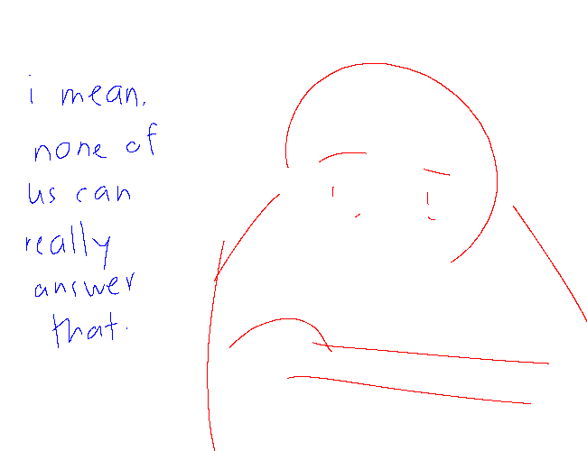
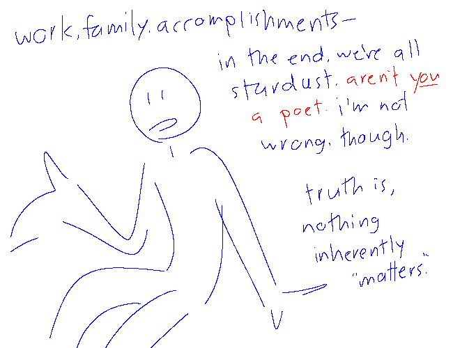
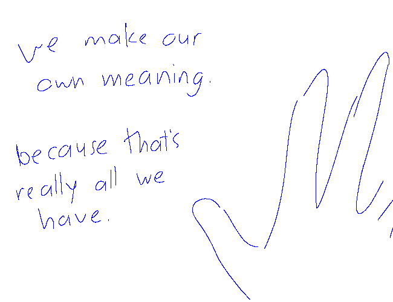
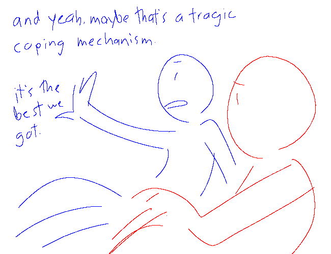
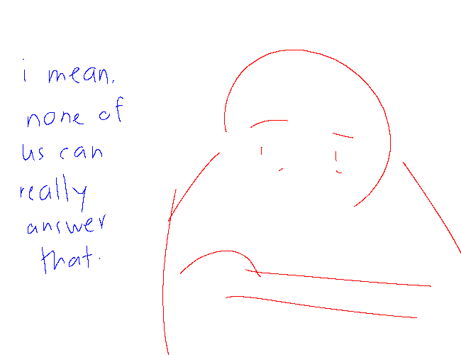
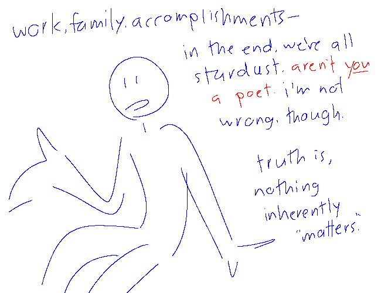
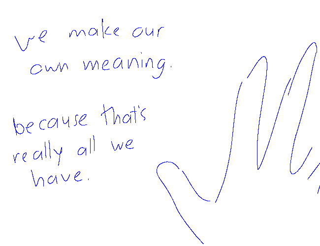
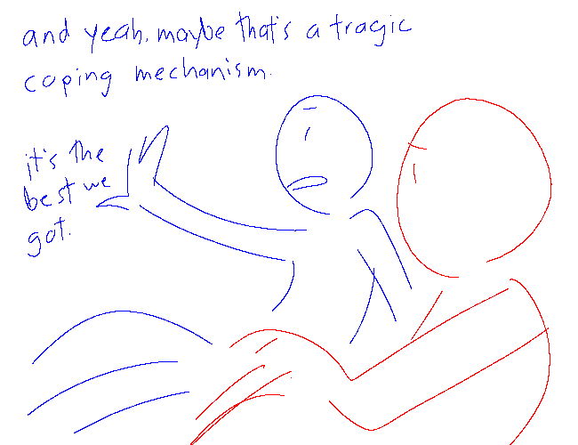
 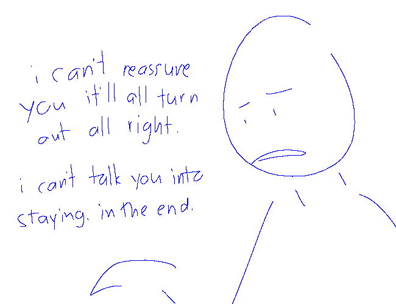
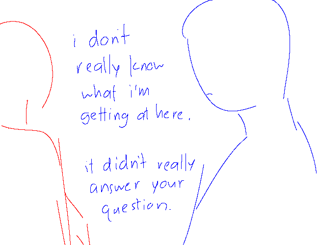
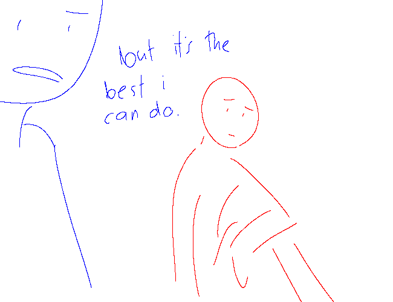
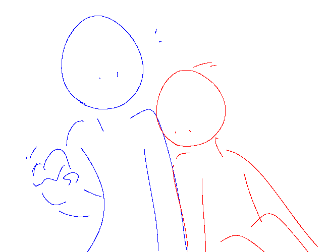
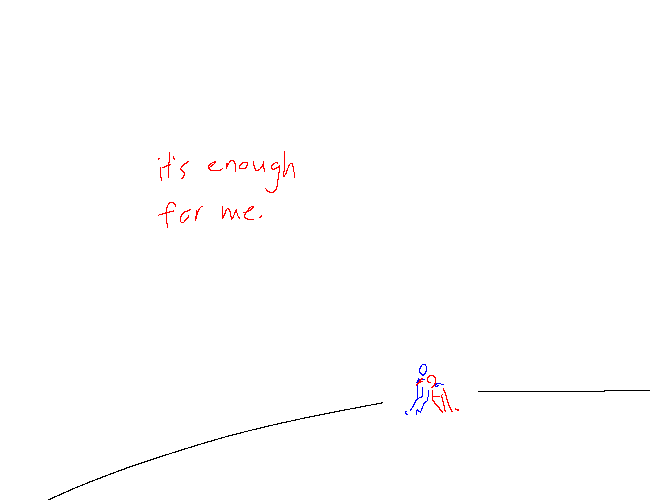
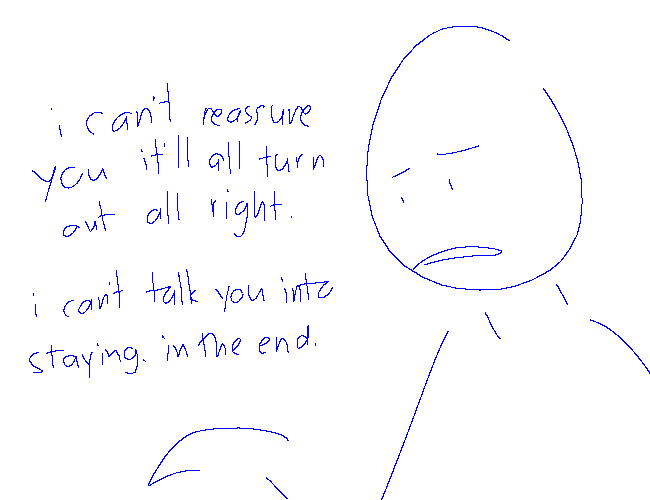
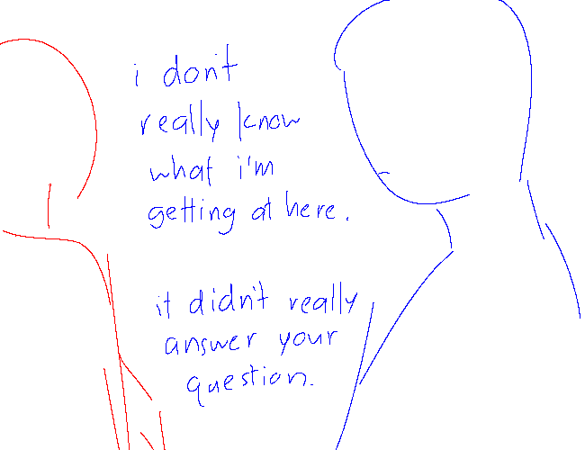
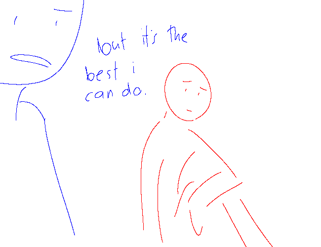
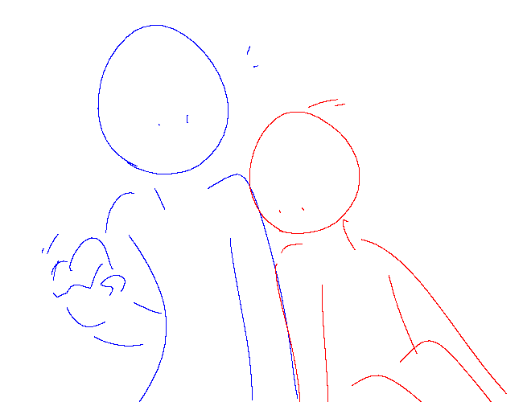
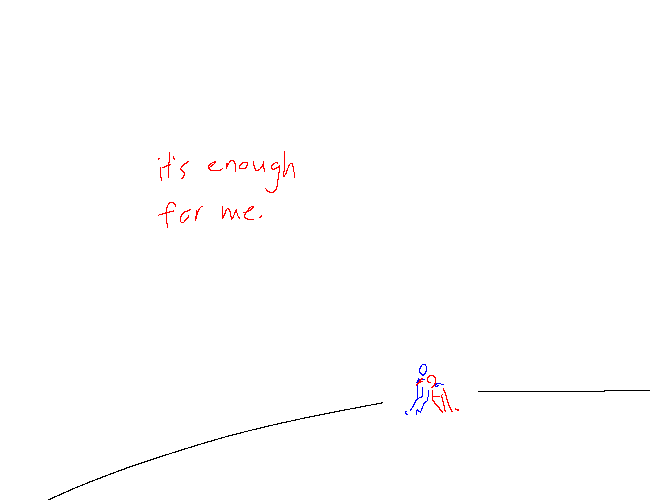
text version
Two people, “red” (R) and “blue” (B), have a talk.
Red starts. “hey, blue.”
“yeah, red?”
A pause.
“red?”
“what’s the point of all this?”
Blue looks over. Red continues: “i keep thinking about… i dunno.” Lost in thought. “we’re here. we’re alive. what else is there?”
Doesn’t look like much.
Red: “there’s a void in my chest where happiness should be. but is anyone ever really ‘happy’?
“maybe for a time. a long time, even. but it can’t last.” Blue’s paying attention. Red continues: “life… people change too much for that. no matter what.
“what keeps you going… when there’s nothing to ‘go’ for?”
Blue responds: “i mean, none of us can really answer that.
“work, family, accomplishments—in the end, we’re all stardust.”
“aren’t you a poet.”
“i’m not wrong, though,” blue continues. “truth is, nothing inherently ‘matters.’ we make our own meaning. because that’s really all we have.
“and yeah, maybe that’s a tragic coping mechanism. it’s the best we got.”
Red’s watching.
“i can’t reassure you it’ll all turn out all right.” Blue doesn’t look over. “i can’t talk you into staying, in the end.
“i don’t really know what i’m getting at here. it didn’t really answer your question.
“but it’s the best i can do.”
Red leans over.
“it’s enough for me.”